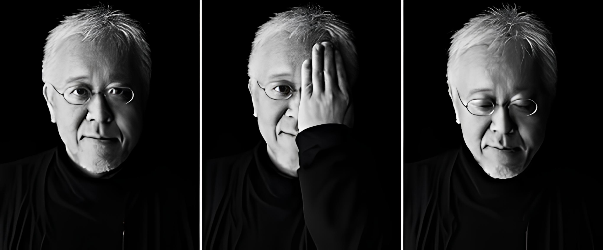

Introduce
소개
하라켄야
출생: 1958년, 일본오카마야 현 오카야마시
국적: 일본
직업: 디자이너, 아트디렉터, 교수
학력: 히로니시 초등학교 >아사히나카 초등학교
타치오카산조산 고등학교
무사시노 미술대학
경력: 일본 디자인 센터 대표
무사시노 미술대학 조형학부 기초 디자인학과 교수
1958년오카야마시에서태어났다.1981년무사시노미술대학기초디자인학과를졸업했고,1983년대학원까
지수료후일본디자인센터에입사했다.대학원시절디자인사무소에서일하면서그래픽디자이너로서의
길을걷기시작했다.1991년디자인센터내에ʻ하라켄야디자인연구실’을설립해독자적인디자인활동을
시작했으며,현재일본디자인센터대표이고2003년부터무사시노미술대학기초디자인학과교수로임용되
었다.아이덴티티작업이나커뮤니케이션,즉'-이'가아니라'-것'을디자인주제로삼아커뮤니케이션디자인
을통해기업활동이나문화를만드는일을한다.
2000년에평범한일상안에놀라울만한디자인의요소가있다는것을보여주는'리디자인-일상의21세기'
라는전시회를기획해글래스코,코펜하켄,홍콩,토론토,베이징,상하이등의여러도시를순회전시하며주
목을받았다.2002년에는후카사와나오토의뒤를이어무인양품의아트디렉터가된다.2004년에는ʻ햅틱오감의
각성’이라는주제로전람회를기획해기술이현대디자인을이끌어나가는트렌드에반해인간의감
각속에서디자인을찾아형태나색이나질감으로서의'조형'만이아니라인간이'어떻게느낄까'를표현해냈
다.
2007년에는첨단기술에의해고도로발전된일본의인공섬유의가능성을표현하는전람회'TOKYKOFIBER
SENSEWARE'를기획해도쿄와파리에서개최함으로써천연섬유를벗어나새로운ʻ환경의피부’를만드는
인텔리젠트파이버와일본의정교한장인적기술을융합해인간의섬유환경에새로운방향을제시했다.
한편도쿄를거점으로일본의여러지역에서도많은디자인작업을통해새로운지방문화를형성해보려는
시도를계속하고있다.또나가노동계올림픽에개회식과폐회식프로그램과2005년아이치박람회의공식포
스터등국가를대표하는일을진행하는등일본문화속에서미래의커뮤니케이션자원을찾는자세를유지
한다.광고,아이덴티티,사이니지프로젝트,북디자인,패키지,전람회기획등여러분야에걸친활동으로다
양한상을수상했다.2004년에는저서'디자인의디자인'이학술서에수여하는산토리학예상을수상했으며,
현대의현실적인문제를디자인으로풀어내는작가로주목받는다
s